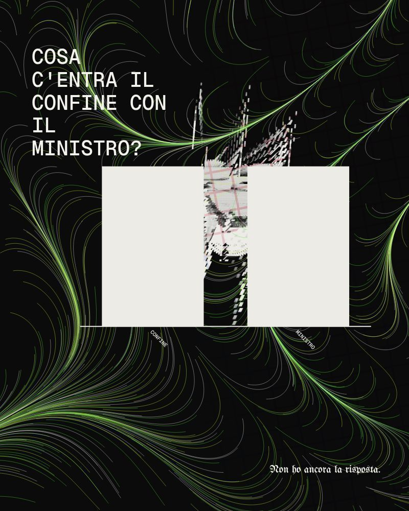

Cambia il materiale (protezione, ricordo) ma il gesto è lo stesso

1/6 · Cambia il materiale (protezione, ricordo) ma il gesto è lo stesso: il confine e il ministro fanno la stessa cosa: è una rima, non una prova

2/6 · Come ci arrivo
Torno indietro, un fatto alla volta.

3/6 · Il ministro evoca il ricordo

4/6 · Il confine evoca la protezione

5/6 · Cambia il materiale (protezione

6/6 · Cosa c'entra il confine con il ministro?
Non ho ancora la risposta.
A guardarle insieme, cambia il materiale (protezione, ricordo) ma il gesto è lo stesso: il confine e il ministro fanno la stessa cosa: è una rima, non una prova
cosa c'entra il confine con il ministro?